Appalachian Trail
The classic ridgeline of the eastern United States, Georgia all the way to Maine.
There are 3,536 km between the two ends of the Appalachian Trail, and Mount Katahdin is the far one. The first landmark is Springer Mountain. At 5,000 steps a day it's about 2.7 years of the walking you do anyway. All 118 landmarks are below, in walking order, with a photograph and the story of the place.
- 3,536km end to end
- 118landmarks
- 2.7 yearsat 5,000 steps a day
- Mount Katahdinfinishes at

The landmarks of Appalachian Trail
118 landmarks, in walking order. Each photograph is by the person credited beneath it, used as they licensed it.
-
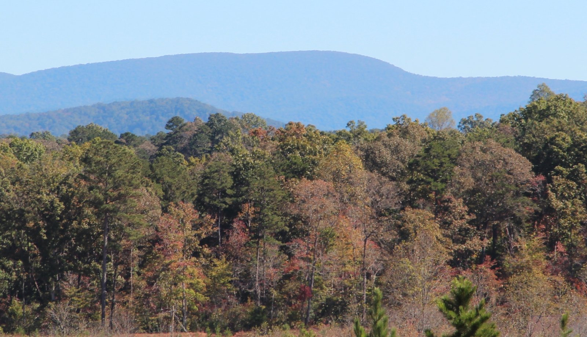
Photo: Thomson200 · Wikimedia Commons, CC0 Springer Mountain
Springer Mountain, deep in the Georgia woods, marks the southern terminus of the Appalachian Trail, its first white blaze set beside a bronze plaque of a striding hiker. A register tucked among the rocks records each hiker who begins here. From this summit some two thousand miles of ridgeline run north toward Katahdin in Maine.
-
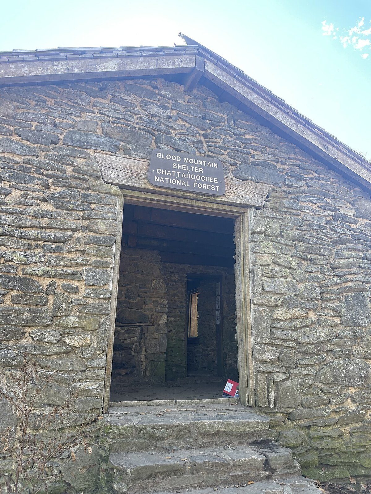
Photo: Tyler Lahti · Wikimedia Commons, CC BY-SA 4.0 Blood Mountain
Blood Mountain carries the Appalachian Trail to its highest point in Georgia. A two-room stone shelter stands on the bald crown, one of the few the Civilian Conservation Corps built along the trail in the 1930s. Cherokee accounts tell of a battle fought on these slopes fierce enough to leave the ground running red.
-
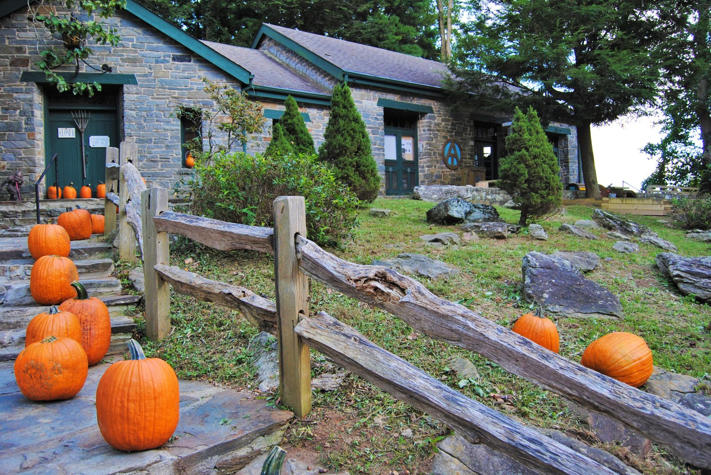
Photo: Gwringle · Wikimedia Commons, CC BY-SA 3.0 Neels Gap
Neels Gap holds the only point where the Appalachian Trail passes indoors, threading beneath the stone breezeway of the Mountain Crossings outfitter. The oak tree out front hangs heavy with the boots of hikers who gave up and tossed them into its branches. The shop is the first real chance to resupply and shed unneeded pack weight north of Springer.
-
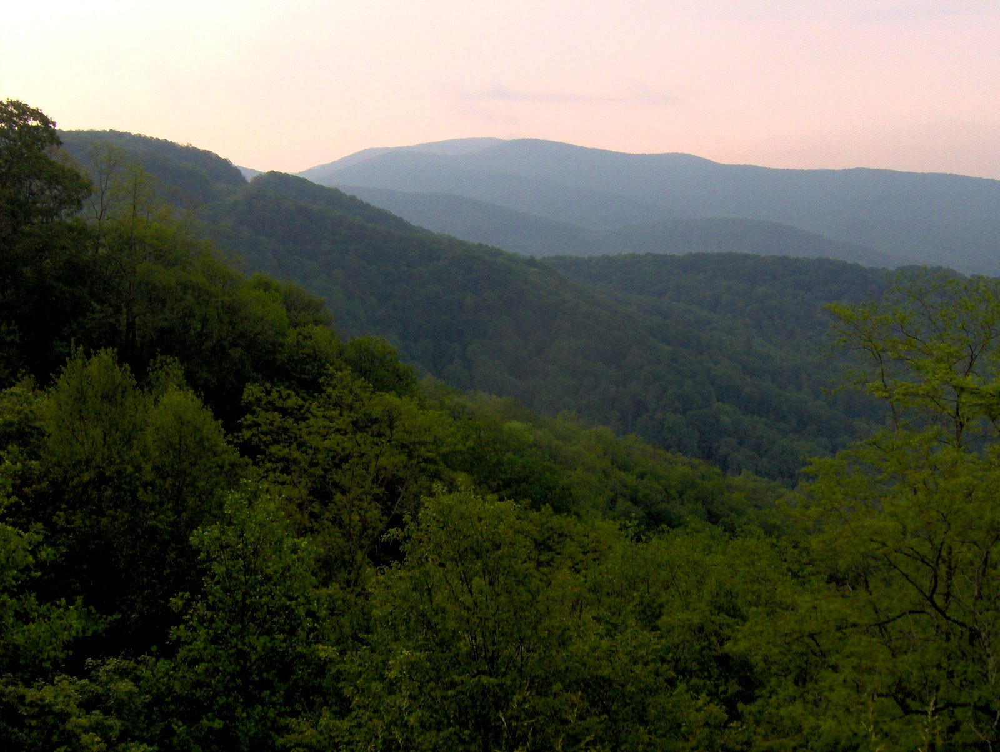
Photo: Brian Stansberry · Wikimedia Commons, CC BY 3.0 Unicoi Gap
Georgia Highway 75 crosses Unicoi Gap, a wind-funneling notch between Rocky Mountain and Tray Mountain where cold air pours through the cut. The pavement is a brief reminder of the settled valleys below the ridgeline. North of the gap the trail climbs toward Standing Indian, the first summit it carries above five thousand feet.
-
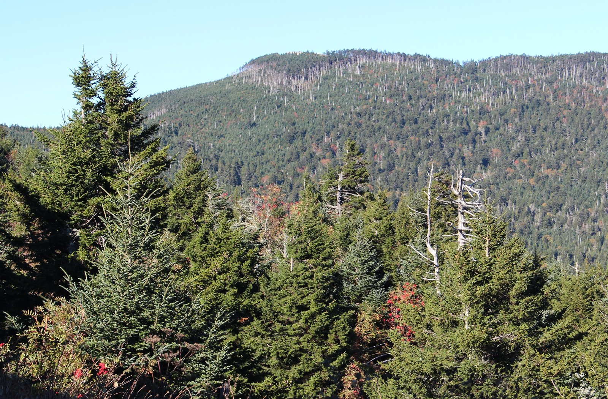
Photo: Thomson200 · Wikimedia Commons, CC0 Standing Indian Mountain
The open shoulder of Standing Indian is the first summit on the trail to top five thousand feet. Cherokee story tells of a watchman turned to stone here, and the southern view spills over the Tallulah River valley. Linger on the grassy bald, then descend toward the Nantahalas.
-
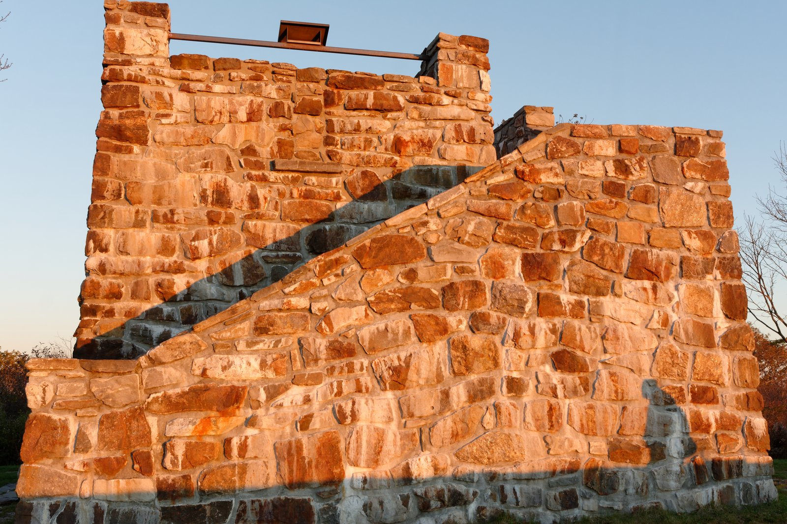
Photo: Jud McCranie · Wikimedia Commons, CC BY-SA 4.0 Wayah Bald
A squat stone observation tower crowns Wayah Bald, raised by the Civilian Conservation Corps in the 1930s. On a clear day the Smokies stand blue to the north and the Nantahala range rolls away on every side. Flame azalea blazes here in early summer; press on through the rhododendron toward the river.
-
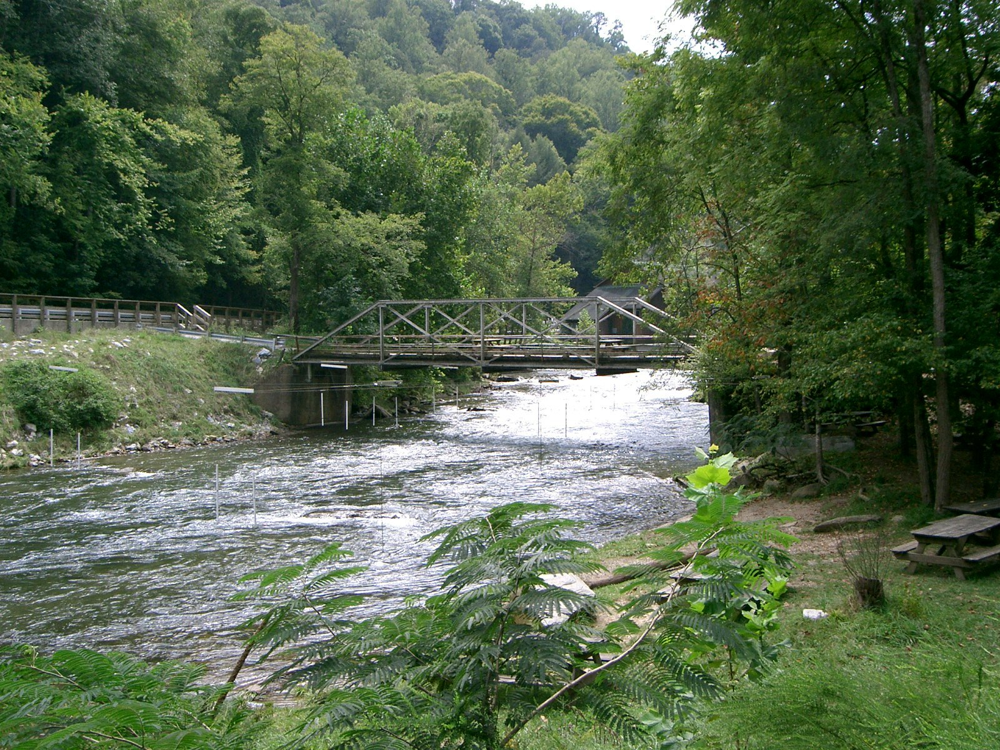
Photo: Nader Moussa · Wikimedia Commons, CC BY-SA 3.0 Nantahala River at Wesser
A long, knee-jarring descent drops to the Nantahala River, where the trail meets the Nantahala Outdoor Center at Wesser. Kayakers work the cold whitewater while a railroad line runs the far bank. The center offers a hot meal before one of the steepest climbs in the southern Appalachians lifts the trail back toward the Smokies.
-
Cheoah Bald
Cheoah Bald rewards a punishing climb with one of the finest viewpoints in the southern Appalachians. The Smokies fill the northern horizon; the Nantahala gorge falls away behind. It is a hard-won summit, so rest in the grass before the long drop to the dam.
-
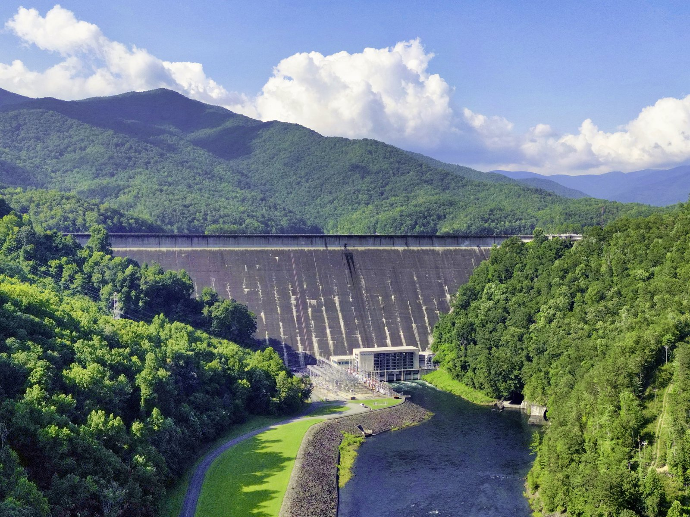
Photo: Harrison Keely · Wikimedia Commons, CC BY 4.0 Fontana Dam
Fontana Dam is the tallest wall of concrete east of the Rockies, raised in wartime to power the making of aluminum, and the trail runs along its crest. The Smokies roll away green and endless on the far side. Top up at the shelter hikers call the Fontana Hilton, then climb into the national park.
-
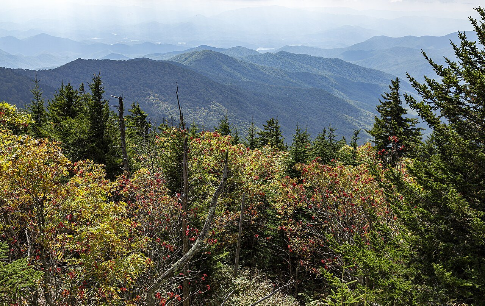
Photo: Acroterion · Wikimedia Commons, CC BY-SA 4.0 Clingmans Dome
Clingmans Dome is the highest point on the entire Appalachian Trail, and a spiral concrete ramp lifts an observation platform above the treetops. Silvered skeletons of Fraser fir stand across the summit, killed by the balsam woolly adelgid, a tiny introduced insect. On a clear day the view runs close to a hundred miles across the Smokies.
-
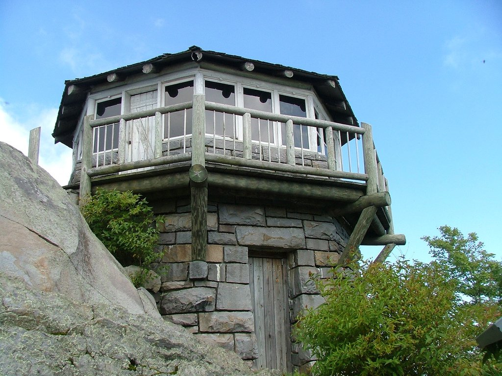
Photo: Unknown · Wikimedia Commons, CC BY 2.5 Mount Cammerer
A short side trail leads to the stone fire lookout on Mount Cammerer, its octagonal tower clinging to a rocky knob. The view sweeps over the Pigeon River gorge and the Tennessee foothills. Volunteers restored it, and it is one of the loveliest huts on the ridge; return to the crest and walk on north.
-
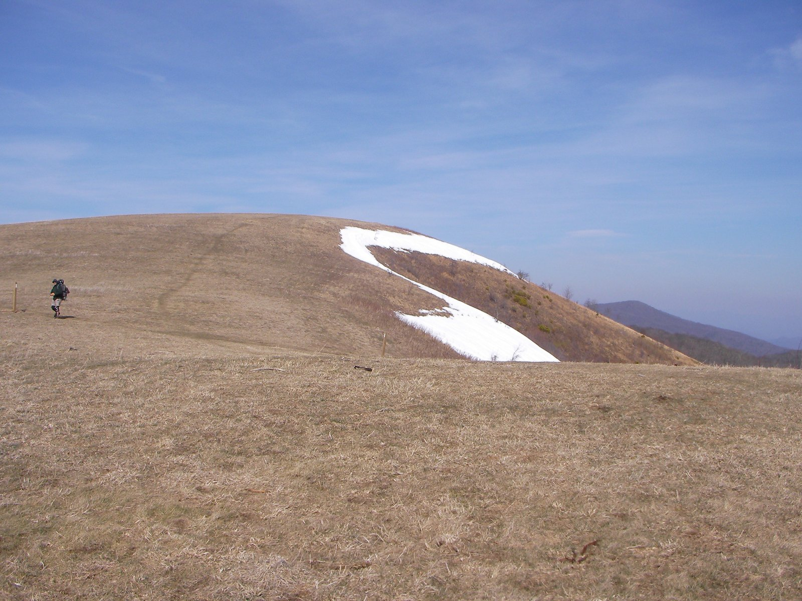
Photo: User:Washedwithblood7 · Wikimedia Commons, Public domain Max Patch
Out of the woods, Max Patch opens as a broad grassy bald that feels like the roof of the world. The 360-degree view takes in the Smokies behind and the Black Mountains ahead, and the meadow was once cleared for grazing cattle. Few spots on the trail lie so open to sky; cross the summit and slip back into forest.
-
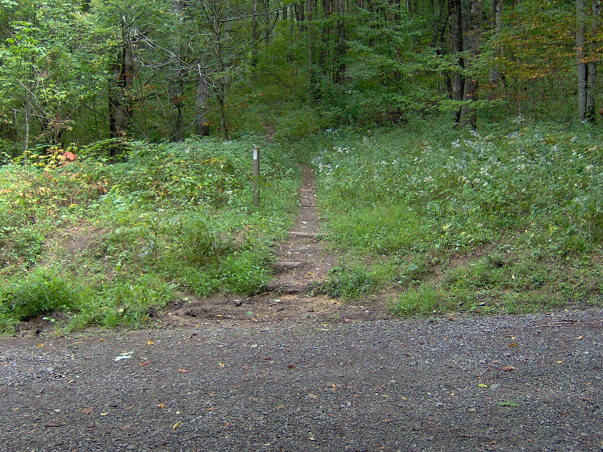
Photo: Brian Stansberry · Wikimedia Commons, CC BY 3.0 Lemon Gap
Birdsong fills the green hush of Lemon Gap, where a gravel road slips over the Tennessee–North Carolina line. A single faded blaze marks the state border underfoot. Rhododendron closes in on the climb north, which leads eventually to the cliffs of Lovers Leap above the French Broad River.
-
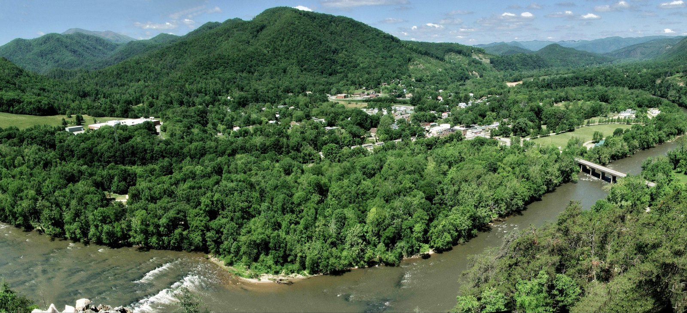
Photo: Hot Springs Tourism & Welcome Center · Wikimedia Commons, CC BY-SA 4.0 Hot Springs
The white blazes lead straight down the main street of Hot Springs, one of the few towns the trail walks right through. People have soaked in its warm mineral water beside the French Broad River since long before the trail existed. Rest a night, then find the blazes back into the trees.
-
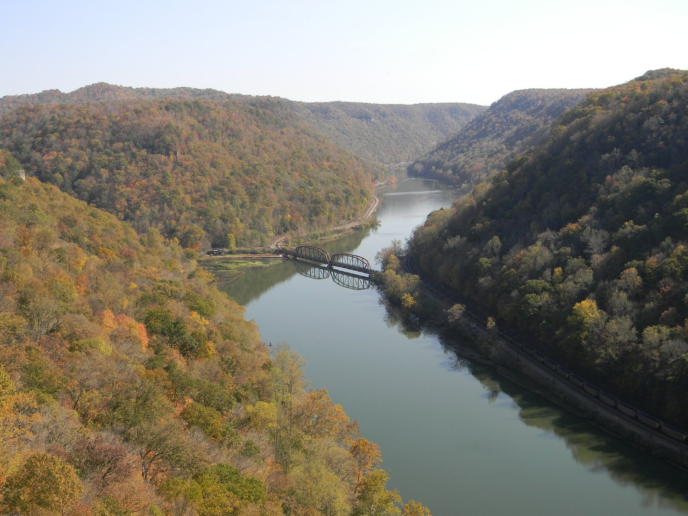
Photo: NKS22 · Wikimedia Commons, Public domain Lovers Leap Rock
Out of Hot Springs the trail climbs the cliff edge of Lovers Leap, high above the French Broad River. The rock takes its name from a Cherokee legend of a heartbroken maiden, and the river bends far below in a green sweep. Pause at the overlook, then follow the ridge north toward the balds.
-
Allen Gap
A quiet highway crosses Allen Gap, where warm tarmac gives way to leaf mold as the trail climbs back into the trees. Mineral springs in the Paint Creek country folded below once drew a small resort. The scoured, rocky spine of Big Firescald Knob rises just to the north.
-
Big Firescald Knob
The jagged spine of Big Firescald Knob forces the trail over bare rock, with long views east and west. Old wildfires that swept the crest gave the scoured ridgeline its name. This is slow, hands-on walking; take care over the rocks and carry on toward the balds.
-
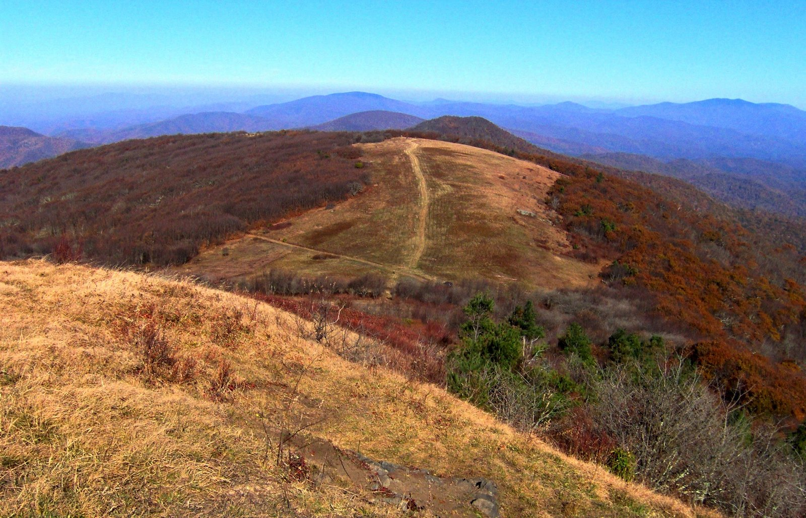
Photo: Brian Stansberry · Wikimedia Commons, CC BY 3.0 Big Bald
Big Bald sweeps up as a grassy dome straddling the state line, with one of the widest views in the region. Each autumn a hawk-watch counts thousands of raptors riding the thermals past this summit. The wind never lets up; cross the open ground and drop back into the trees.
-
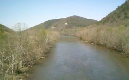
Photo: Unknown · Wikimedia Commons, Public domain Nolichucky River at Erwin
At the bottom of a deep gorge, the Nolichucky River meets the railroad town of Erwin, and the trail comes down to cold rushing water. Outfitters and a hostel cluster near the crossing, a welcome resupply after the balds. Rest, eat, then begin the long climb toward Roan.
-
Beauty Spot
Beauty Spot lives up to its name: a grassy bald with a clean 360-degree sweep over the Unaka range. A gravel road reaches near the summit, yet the meadow feels open and remote. Take in the view, then follow the ridge toward the Roan Highlands ahead.
-
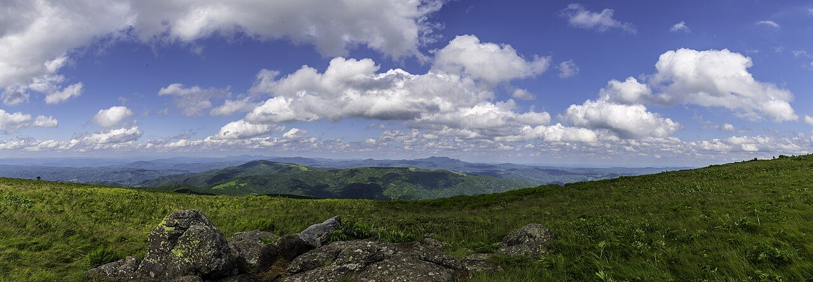
Photo: Chris Bennett · Wikimedia Commons, CC BY 2.0 Roan Highlands
The open grassy balds of the Roan Highlands run treeless above six thousand feet, with views in every direction. Come June, the largest wild rhododendron garden on earth burns purple across the slopes. The walking is gentle up here, so walk tall.
-
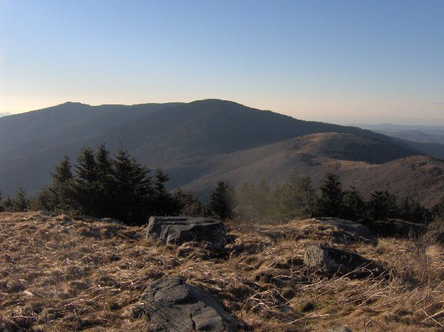
Photo: Brian Stansberry · Wikimedia Commons, CC BY 2.5 Overmountain Shelter
An old red barn known as Overmountain Shelter looks out over the green sweep of the Roaring Creek valley. Its hayloft long served as one of the most photographed bunks on the trail, named for the patriot militia who marched this way in 1780. Soak in the valley view, then climb toward the open Highland balds.
-
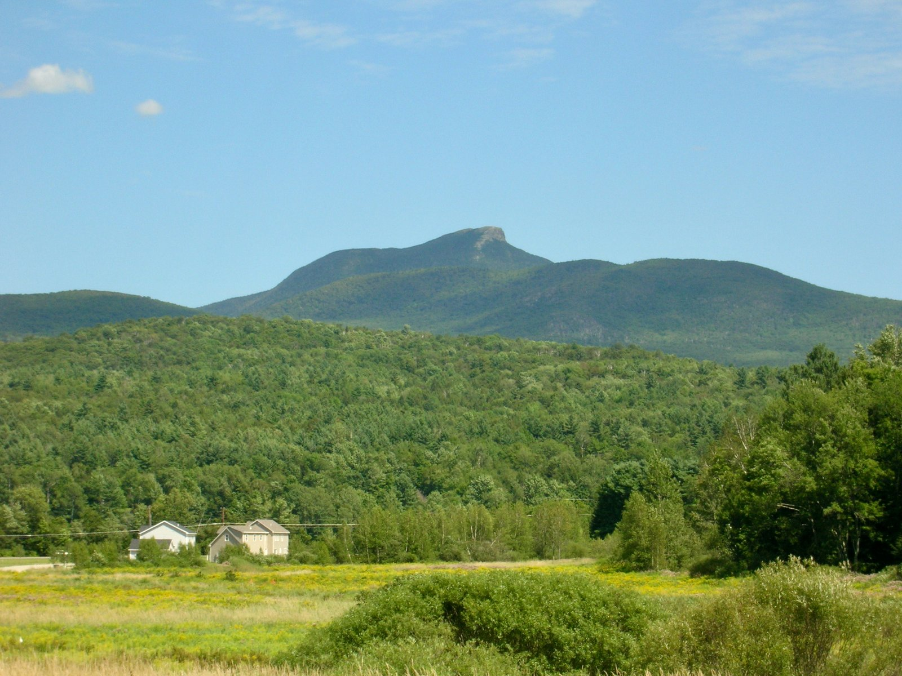
Photo: Niranjan Arminius · Wikimedia Commons, CC BY-SA 4.0 Hump Mountain
Wind runs unbroken over miles of grass on the great rounded crown of Hump Mountain, a treeless bald near the Tennessee–North Carolina line. The view rolls north into Virginia, and on a clear day the ridges already walked stand out to the south. It ranks among the finest grassy balds on the entire trail.
-
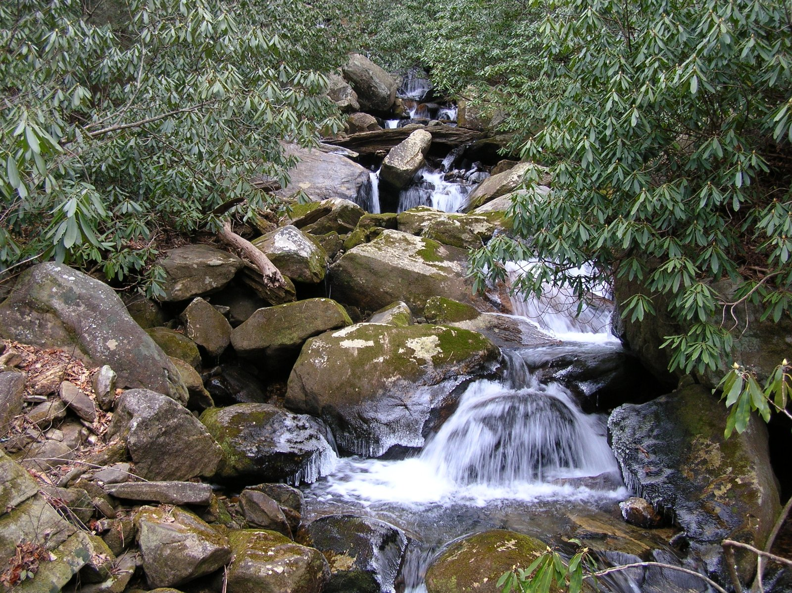
Photo: Clemson3564 · Wikimedia Commons, Public domain Laurel Fork Falls
Laurel Fork tumbles through a rocky gorge to a broad cascade that spills into a clear pool. The trail squeezes along the cliff base beside the rushing creek, cool and green even in high summer. Wet rock makes the footing slick before the climb out toward Pond Mountain.
-
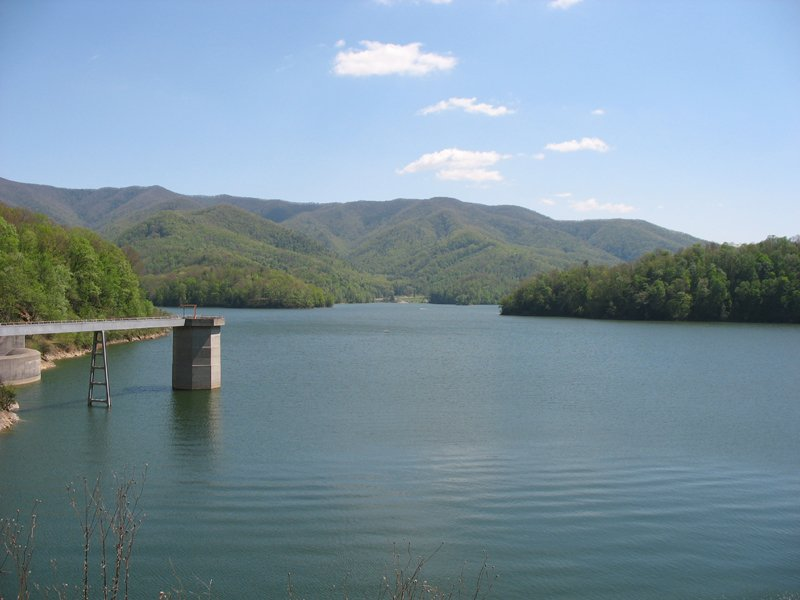
Photo: Ryan Rice at en.wikipedia · Wikimedia Commons, CC BY-SA 3.0 Watauga Lake
Blue water opens at Watauga Lake, a reservoir held back by a tall earthen dam on the Watauga River. The trail crosses the dam itself, water on one side and a long drop on the other. It is an easy, welcome stretch; follow the shore and climb on toward Damascus.
-
Photo: G. Edward Johnson · Wikimedia Commons, CC BY 4.0 Damascus
Damascus, Virginia, carries a reputation as the friendliest town on the trail, which runs straight through its center. Each May the town hosts Trail Days, the largest gathering of hikers in the world, drawing thousands back to the route. Few trail towns welcome walkers so completely.
-
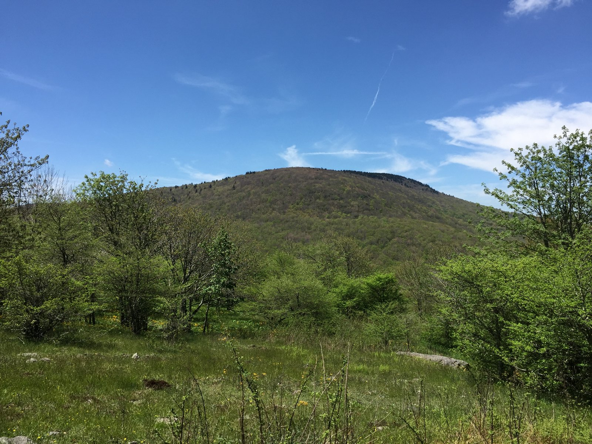
Photo: Famartin · Wikimedia Commons, CC BY-SA 4.0 Whitetop Mountain
Whitetop, the second-highest peak in Virginia, opens into high meadows near its summit. The trail skirts just below the very top, but the views over the Mount Rogers high country are immense. Wild ponies sometimes graze nearby; press on across the open ground.
-
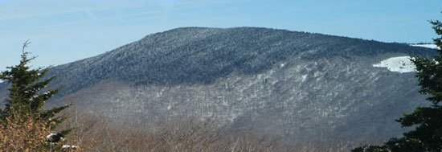
Photo: USDA-FS · Wikimedia Commons, Public domain Mount Rogers
The highest point in Virginia stands at 5,729 feet on the wooded summit of Mount Rogers, reached by a short spur off the main trail. A dark, fragrant spruce-fir forest cloaks the crown, more like eastern Canada than the southern Appalachians. There is no view from the very top, but the rare boreal woods reward the short detour.
-
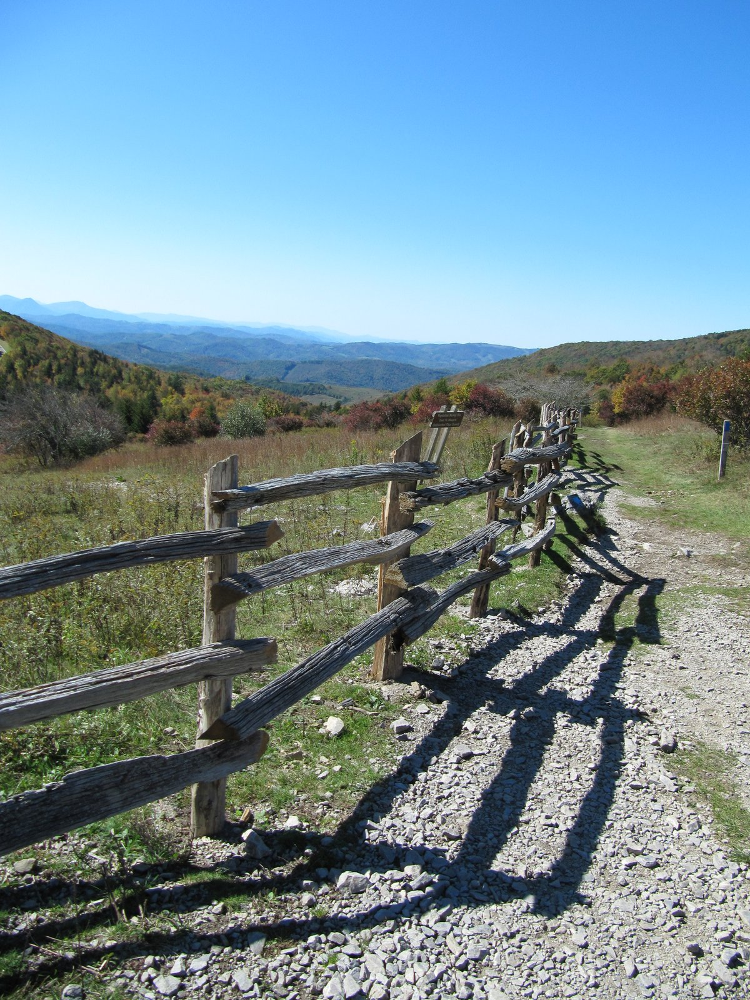
Photo: Virginia State Parks staff · Wikimedia Commons, CC BY 2.0 Grayson Highlands
Wild ponies roam free across the Grayson Highlands, a windswept tableland of rock outcrops and grassy balds. The shaggy little horses graze right beside the trail, kept here to keep the meadows open. It is one of the trail's most beloved stretches; walk gently among them and on toward Rogers.
-
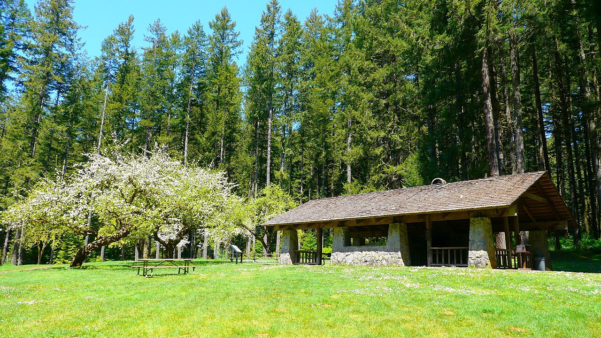
Photo: RickObst · Wikimedia Commons, CC BY-SA 4.0 Old Orchard Shelter
Mountain settlers once planted apple trees in the clearing that holds Old Orchard Shelter. A spring runs nearby, and the meadow makes an easy, peaceful camp after the high country. Rest on the old orchard ground, then continue toward the New River valley.
-
Partnership Shelter
Partnership Shelter is a two-story bunkhouse beside the Mount Rogers headquarters, and it comes with the rare luxury of a cold shower. Famously, hikers can phone for pizza delivery to this very spot. It is a comfortable waypoint; clean up, eat well, and walk on toward Atkins.
-
Atkins
Interstate 81 roars past Atkins, where a diner and a motel sit at the very edge of the trail. The smell of frying onions drifts up to the ridge, a pull off the mountain after long miles. North of the highway the climb leads to the grassy bald and stone-walled Chestnut Knob Shelter.
-
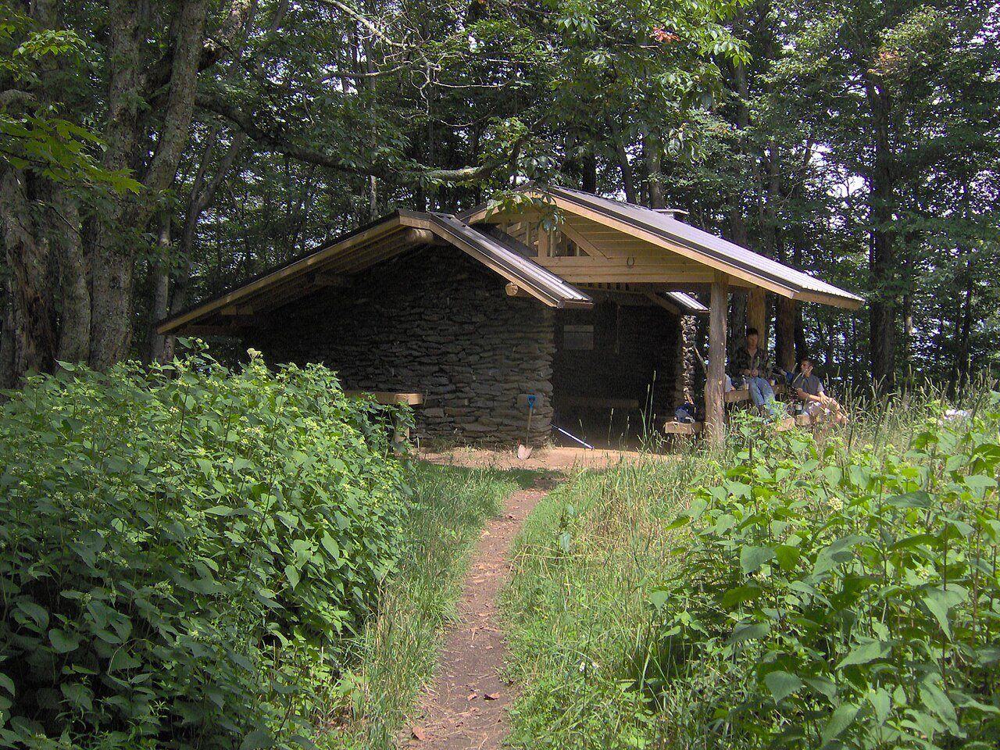
Photo: Brian Stansberry · Wikimedia Commons, CC BY 3.0 Chestnut Knob Shelter
A former fire warden's cabin, stone-walled Chestnut Knob Shelter perches on a grassy bald near 4,400 feet. Its enclosed room offers rare shelter from the wind, and Burke's Garden spreads far below like a green bowl. Take in the valley, then descend toward Walker Mountain.
-
Jenkins Shelter
Tucked in the woods along Hunting Camp Creek, Jenkins Shelter is a quiet stop in a long, lonely stretch of ridge. The creek runs nearby, and deep forest closes in on all sides. The walking through here is remote; rest, water up, and carry on toward Bland.
-
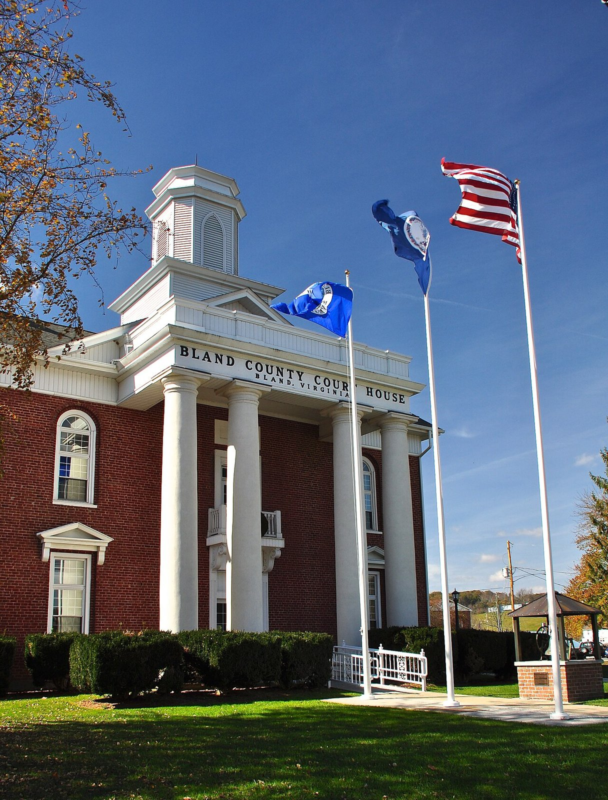
Photo: Skye Marthaler · Wikimedia Commons, CC BY-SA 3.0 Bland
The hum of Interstate 77 rises as the green tunnel opens onto Bland, a tidy county seat below the ridge. A motel and a store feel like luxury after the long, lonely miles from Jenkins Shelter. Back in the woods to the north lies the swimming hole at Dismal Falls.
-
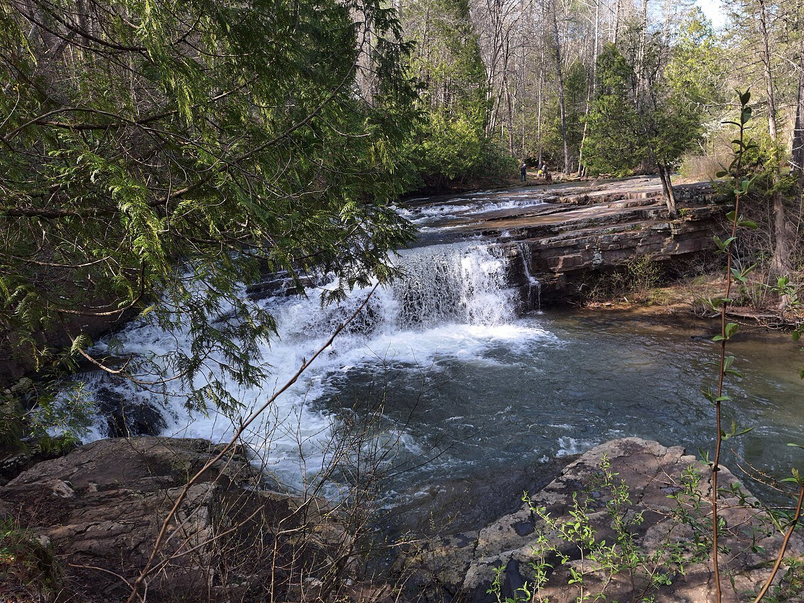
Photo: WilderAddict · Wikimedia Commons, CC BY-SA 4.0 Dismal Falls
Despite its name, Dismal Falls is a cheerful place: a wide, low cascade spilling over a rock ledge into a swimming hole on Dismal Creek. A short side path off the trail reaches it. On a hot day the pool draws crowds for a cooling dip before the miles toward Pearisburg.
-
Angels Rest
From the rocky overlook of Angels Rest on Pearis Mountain, the town of Pearisburg and the wide curve of the New River lie far below. The valley opens out beneath the ledge, a broad reward after the climb. North of here the trail descends toward the New River crossing.
-
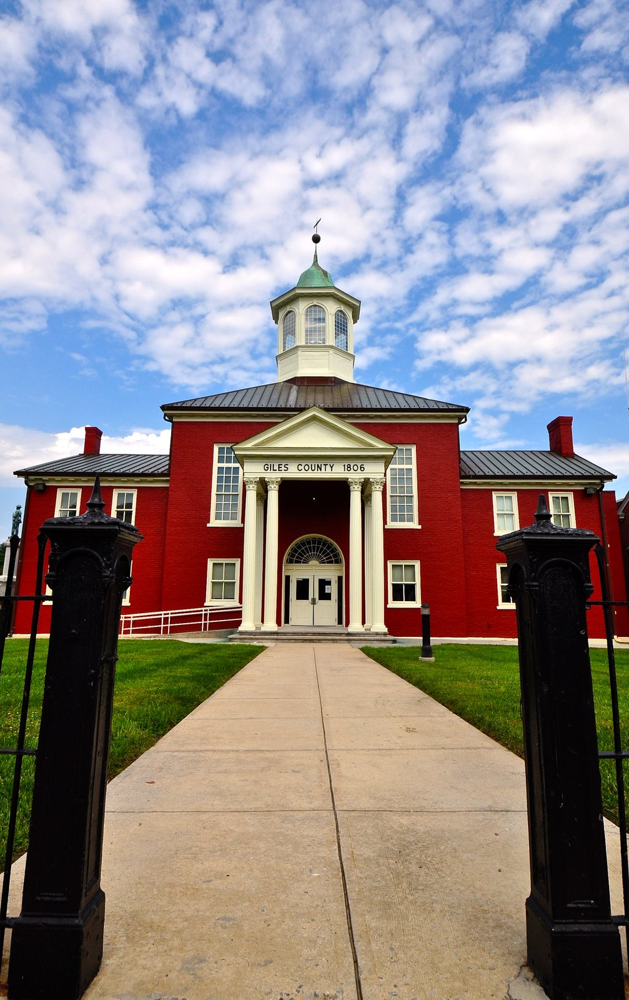
Photo: Skye Marthaler · Wikimedia Commons, CC BY-SA 3.0 Pearisburg
At Pearisburg the trail crosses the New River, one of the oldest rivers on the continent. A hiker hostel run by the local church has long welcomed walkers here. Resupply in town, then climb steeply back to the ridge and on toward the high cliffs.
-
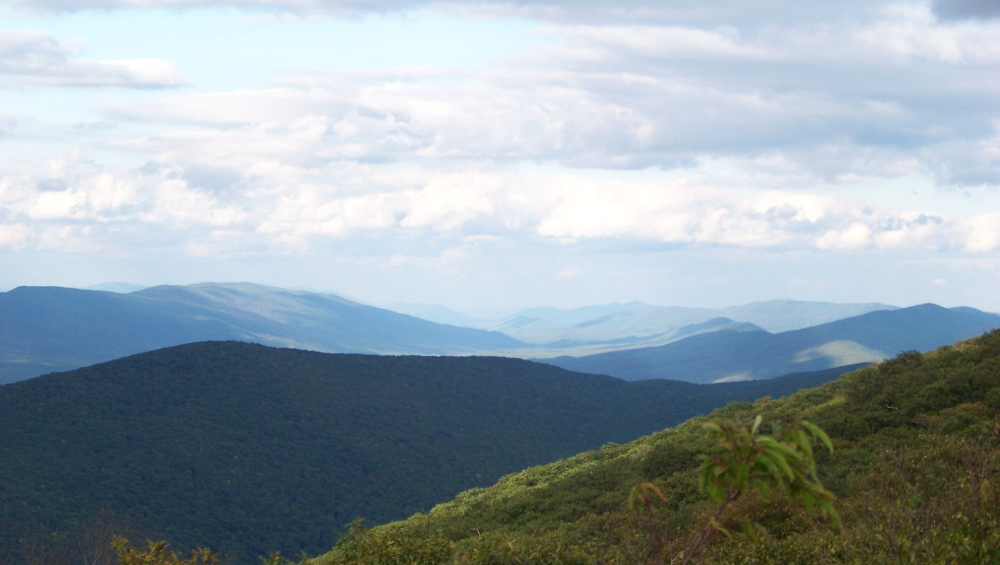
Photo: Idawriter · Wikimedia Commons, CC BY-SA 3.0 Wind Rock
Wind Rock is an open ledge near 4,100 feet, its clear view running north across Stony Creek Valley. It makes a fine, easy reward perched on Potts Mountain. Catch the breeze that gave the rock its name, then walk on toward the cliffs of the Allegheny crest.
-
Bailey Gap Shelter
Dark, hushed woods close around the worn boards of Bailey Gap Shelter, just off the high Salt Pond Mountain ridge. Its spring runs thin in a dry spell, leaving little to draw. Ahead rises the quartzite spire of Dragons Tooth, first of Virginia's triple crown of rugged summits.
-
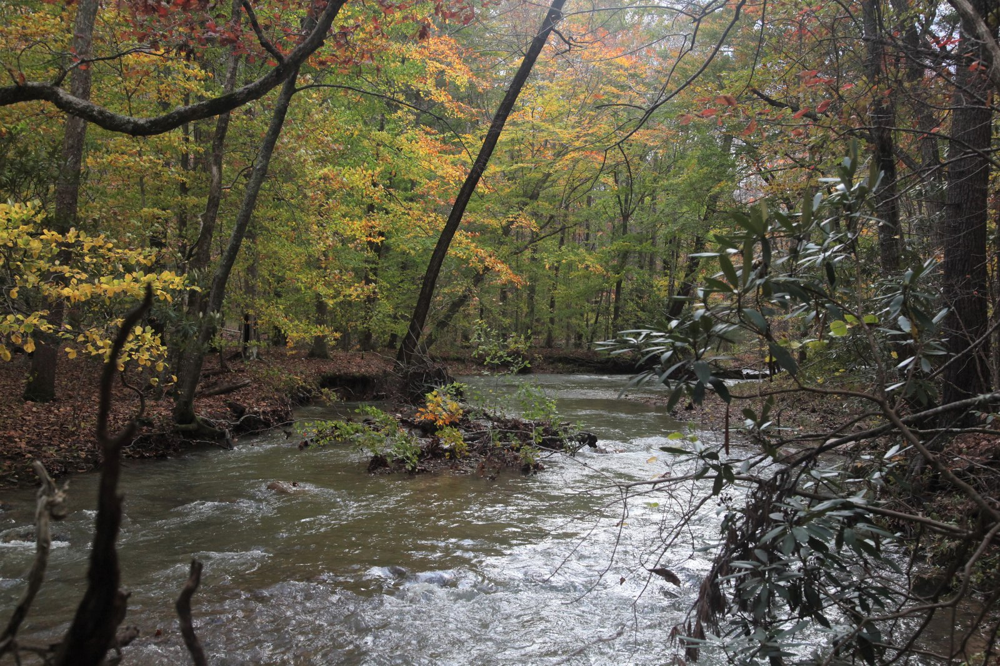
Photo: WilderAddict · Wikimedia Commons, CC BY-SA 4.0 Sinking Creek Mountain
A spectacular line of tilted rock slabs carries the trail along the long, narrow crest of Sinking Creek Mountain. The folded strata tip up at sharp angles, a vivid lesson in Appalachian geology underfoot. Take care over the rock, and enjoy the valley views opening on both sides.
-
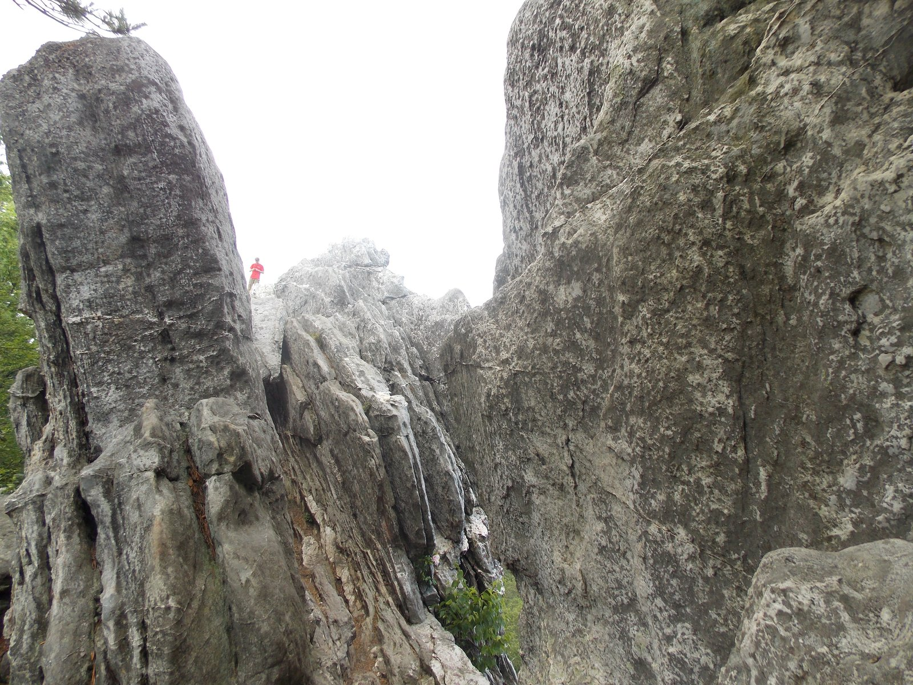
Photo: Caballero1967 · Wikimedia Commons, CC BY-SA 4.0 Dragons Tooth
A jagged spire of Tuscarora quartzite juts from the ridge of Cove Mountain, the formation known as Dragons Tooth. Iron rungs and carved rock steps aid the steepest pitches, and the view from the fang is superb. It is the first of Virginia's famous triple crown, followed by McAfee Knob and Tinker Cliffs.
-
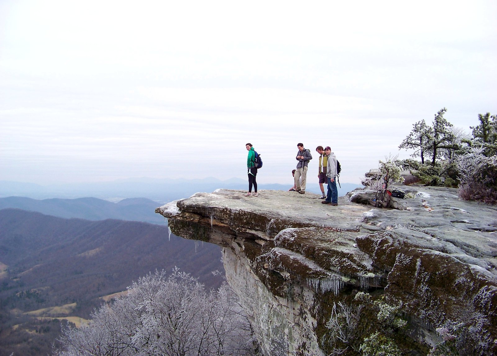
Photo: Idawriter · Wikimedia Commons, CC BY-SA 3.0 McAfee Knob
McAfee Knob is the most photographed place on the entire Appalachian Trail, a flat tongue of rock that juts into open air high above the Catawba Valley. The overhang seems to hang free over the drop, drawing nearly every passing hiker to its edge. Broad views sweep across the valley toward Tinker Cliffs beyond.
-
Tinker Cliffs
For half a mile, Tinker Cliffs stack pale stone along the very edge of the trail. Across the valley, McAfee Knob stands out on its ridge, crossed only a few miles before. The drop is sheer and the views immense as the path follows the cliff line north toward Daleville.
-
Daleville
Busy Route 220 cuts through Daleville, where the trail steps off the ridge into a cluster of motels, diners, and a grocery. It counts among the easiest resupply stops on the whole route, sitting right at the roadside. North of town the trail climbs back toward the Blue Ridge Parkway.
-
Fullhardt Knob Shelter
A rare cistern collects rainwater from the roof of Fullhardt Knob Shelter, up on a wooded knob near the Blue Ridge Parkway. The hut sits quiet with the parkway winding nearby. It is a tidy stop; settle in before the long ridge toward the James River.
-
Bobblets Gap Shelter
The Blue Ridge Parkway hums faintly through the trees at Bobblets Gap Shelter, set just off the crest with its spring a short scramble down the slope. Cars drift past above while the hollow stays quiet. Ahead wait the wedged boulder called the Guillotine and the radar dome crowning Apple Orchard Mountain.
-
Cornelius Creek Shelter
A cool hollow holds Cornelius Creek Shelter beside a reliable rushing stream. The water is a welcome sound after dry ridge miles, and the forest runs deep and green. It is a peaceful camp below Apple Orchard Mountain; rest, then climb toward the high crest.
-
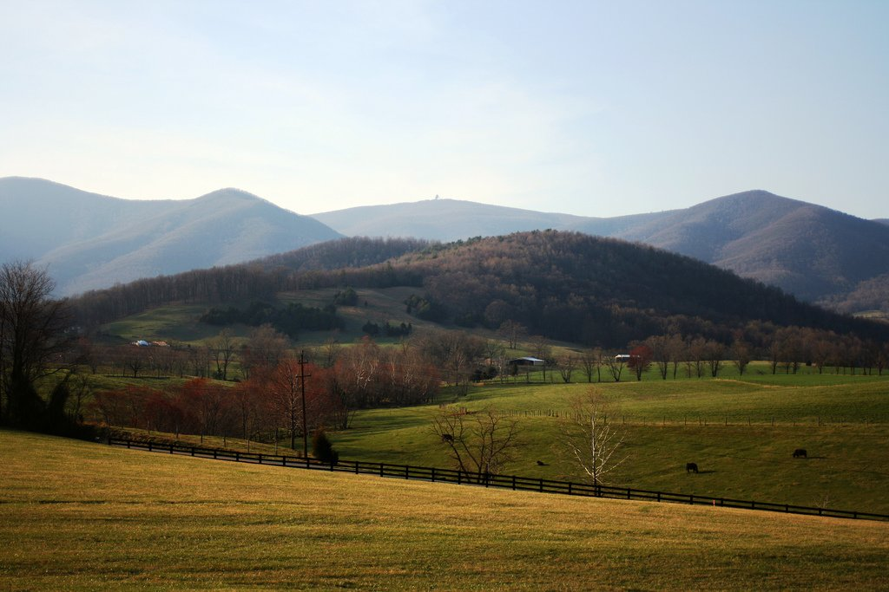
Photo: Gafoto · Wikimedia Commons, CC BY 3.0 Apple Orchard Mountain
The Guillotine hangs over the final pitch of Apple Orchard Mountain, a great boulder wedged between two rock walls that the trail passes beneath. Wind-stunted oak and a humming white radar dome crown the summit, which tops four thousand feet as the high ground of the region. A long descent drops from here toward the James River and the trail's longest footbridge.
-
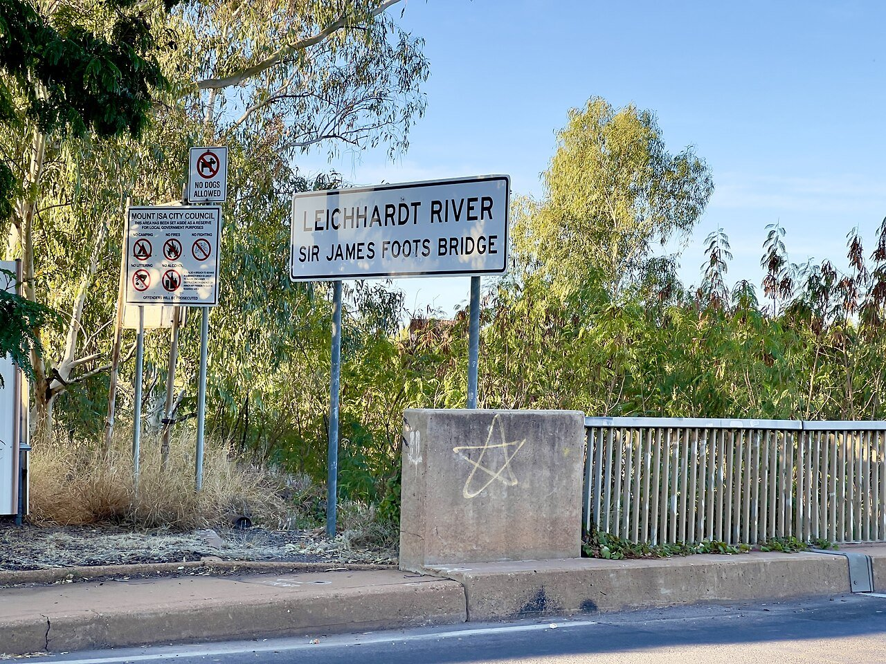
Photo: Kgbo · Wikimedia Commons, CC BY-SA 4.0 James River Foot Bridge
The James River Foot Bridge is the longest foot-only bridge on the entire Appalachian Trail, spanning the wide green river between forested banks. The slow water marks the lowest point in this stretch of the route. Beyond the far bank the trail begins a steady climb toward Punchbowl Shelter and the Priest.
-
Punchbowl Shelter
A small pond reflects the trees beside Punchbowl Shelter, pretty if buggy in summer. Local lore tells of a friendly ghost said to haunt the hut. It is a quiet camp on the climb north; rest by the pond before pushing on toward Bluff Mountain.
-
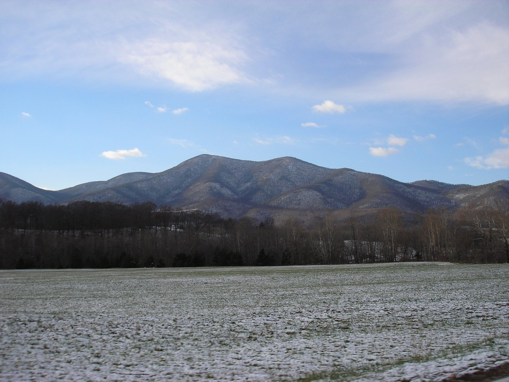
Photo: Wickedender · Wikimedia Commons, CC BY-SA 3.0 The Priest
A long, steep grind up its southern flank earns the four-thousand-foot crest of The Priest. By tradition, hikers write confessions in the shelter logbook here, owning up to their trail sins. Broad views open from the summit clearings before the deep plunge to the Tye River gorge.
-
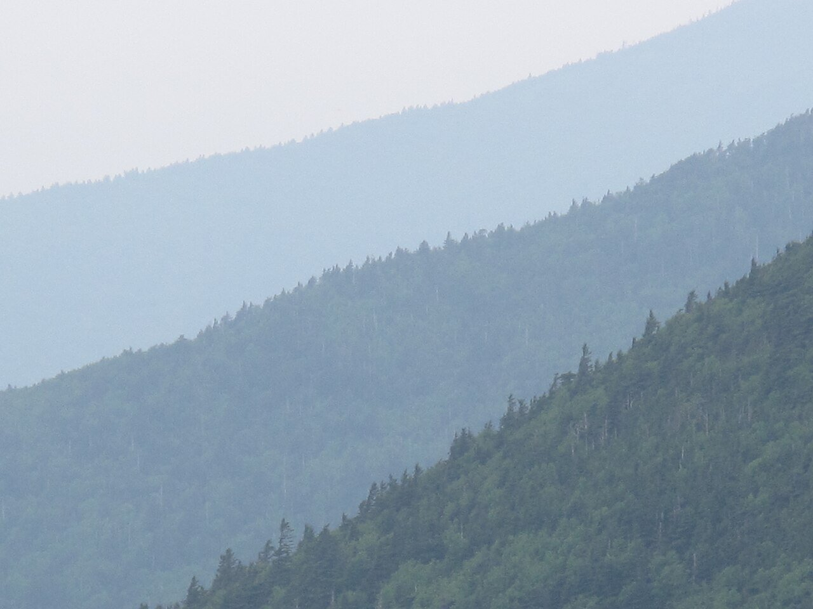
Photo: USFWS/Southeast · Wikimedia Commons, Public domain Three Ridges
Three Ridges is a long, humpbacked mountain that faces The Priest across the deep Tye River gorge. Open rock ledges near its top look straight back at the peak just descended. The climb is strenuous but rewarding, a high loop of ledges and forest before the trail drops to the highway gap.
-
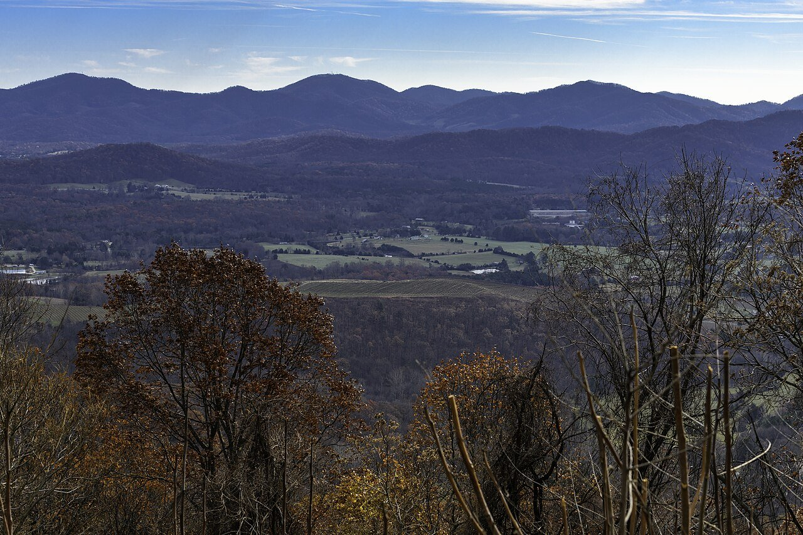
Photo: PumpkinSky · Wikimedia Commons, CC BY-SA 3.0 Rockfish Gap
Rockfish Gap is the busy notch where Interstate 64 and the Blue Ridge Parkway meet, at the southern edge of Shenandoah National Park. Hikers often hitch into Waynesboro from here to resupply. Sign in at the park boundary ahead, then begin the long, gentle ridge through Shenandoah.
-
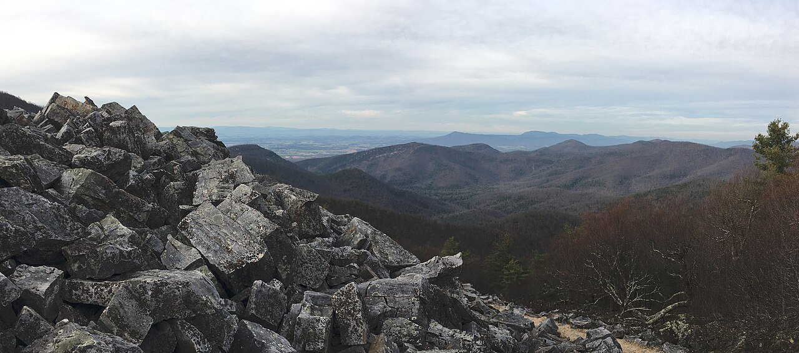
Photo: Fredlyfish4 · Wikimedia Commons, CC BY 4.0 Blackrock Summit
A jumbled crown of greenstone talus marks Blackrock, near Skyline Drive in southern Shenandoah. The trail loops around the boulder pile with wide views over the Shenandoah Valley. Scramble onto the rocks for the vista, then follow the easy ridge deeper into the park.
-
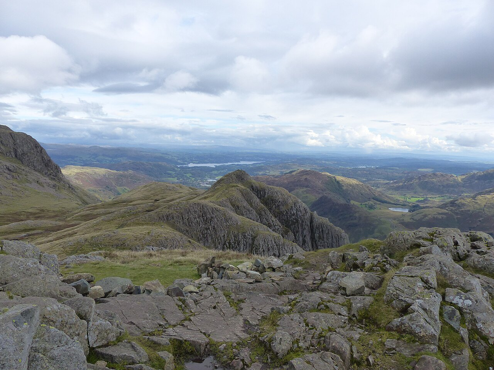
Photo: Anthony Foster · Wikimedia Commons, CC BY-SA 2.0 Loft Mountain
At Loft Mountain the trail loops around a Shenandoah campground with a camp store and showers. The grassy summit nearby gives sweeping views both ways. It is an easy resupply within the park; restock and walk on along Skyline Drive's quiet companion path.
-
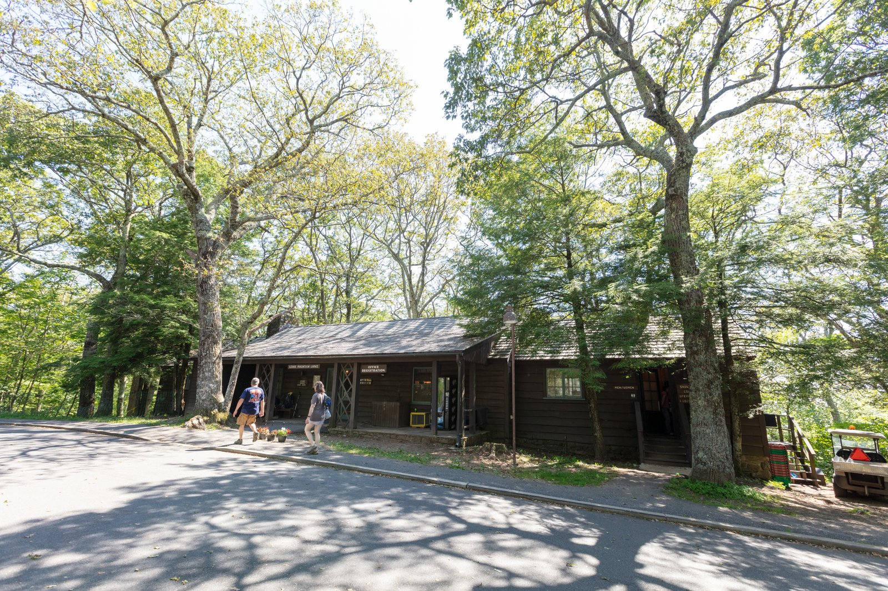
Photo: ShenandoahNPS · Wikimedia Commons, Public domain Lewis Mountain
Lewis Mountain is a small wooded campground with a camp store, tucked along Skyline Drive in central Shenandoah. Quieter and leafier than the park's larger camps, it makes an unhurried resupply. The gentle ridge continues north from here toward Big Meadows.
-
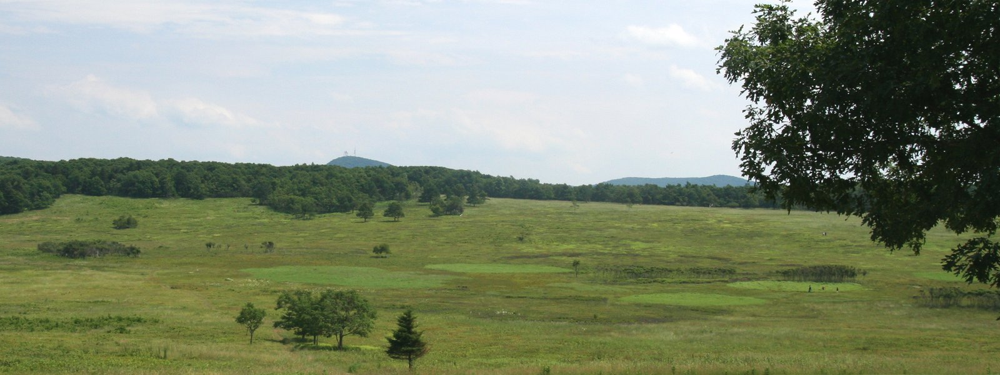
Photo: Wallygva at English Wikipedia · Wikimedia Commons, Public domain Big Meadows
Deer graze the grass at dusk across Big Meadows, a broad open expanse in the heart of Shenandoah. A lodge, store, and wayside sit nearby, and the famous blackberry milkshakes draw every passing hiker. Rest in the open, then walk on toward Skyland and the high peaks.
-
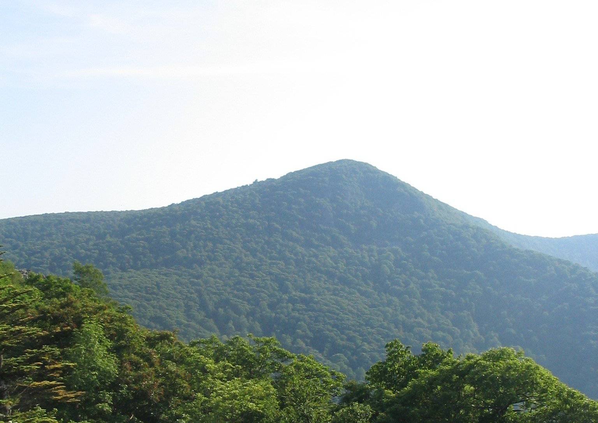
Photo: Dnowacki · Wikimedia Commons, CC BY-SA 3.0 Hawksbill Mountain
The highest peak in Shenandoah rises past 4,050 feet at Hawksbill, crowned by a stone viewing platform a short climb above the trail. Peregrine falcons nest on its cliffs, and the panorama spreads over the whole park. This is the roof of Shenandoah; take the long view and descend toward Stony Man.
-
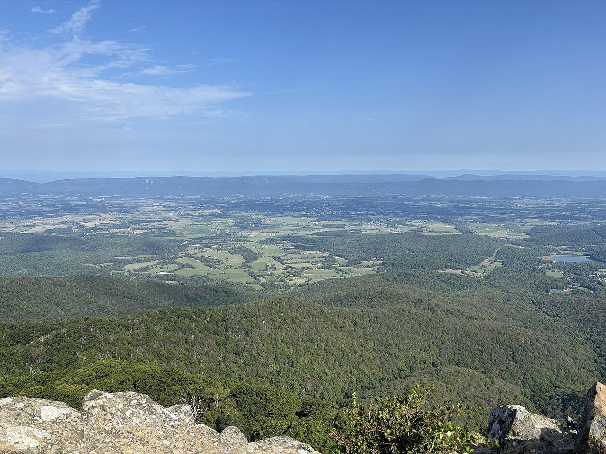
Photo: AGnias47 · Wikimedia Commons, CC BY 4.0 Stony Man
Seen against the sky, the profile of Stony Man gives the mountain its name, its cliffs rising just above Skyland resort. The overlook gazes west over the Shenandoah Valley and the ridges beyond. It is one of the park's easiest grand views; linger, then follow the ridge north toward Thornton Gap.
-
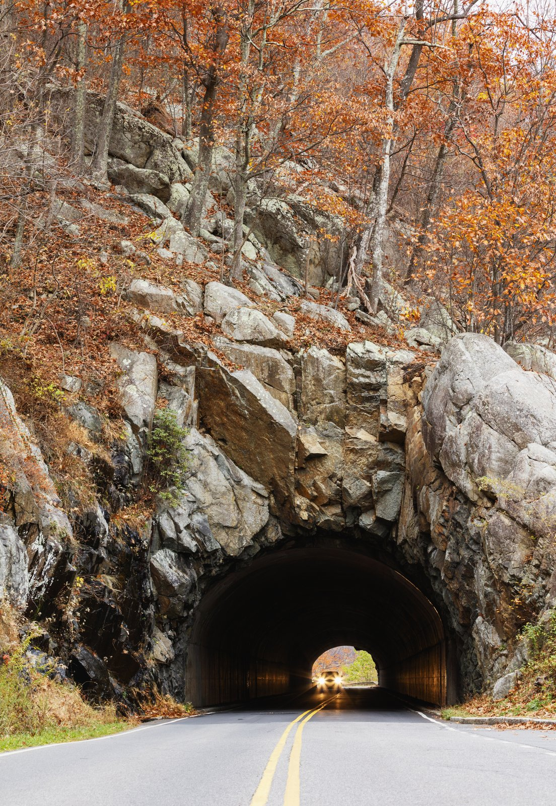
Photo: Shenandoah National Park from Virginia · Wikimedia Commons, Public domain Mary's Rock
A granite outcrop above Thornton Gap, Mary's Rock offers a sweeping, near-circular view over the valleys. The bare rock juts into open air, a favorite perch for sunset. Take in the panorama, then descend toward the northern reaches of Shenandoah.
-
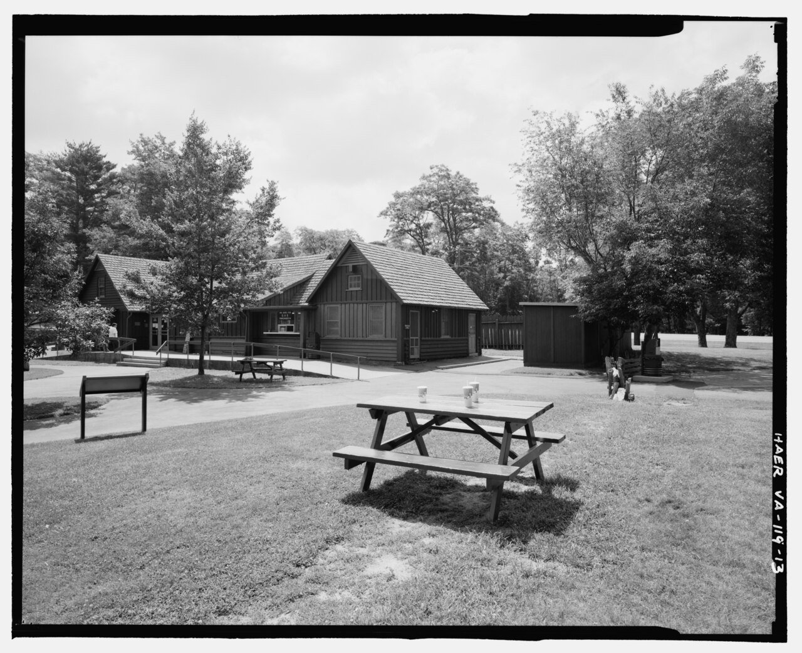
Photo: Faust, William A. II. · Wikimedia Commons, Public domain Elkwallow Gap
A small wayside store along Skyline Drive gives Elkwallow Gap its snacks and a chance to rest. Northern Shenandoah grows quieter and wilder from here on. Grab a treat, then walk toward the park's northern boundary and the long ridge to the Potomac.
-
Manassas Gap Shelter
Beyond Shenandoah, in rolling woods, Manassas Gap Shelter makes a quiet stop along the Virginia rollercoaster. The land here pitches up and down in short, sharp climbs that test the legs. Rest at the hut, then carry on through the green tunnel toward the Roller Coaster.
-
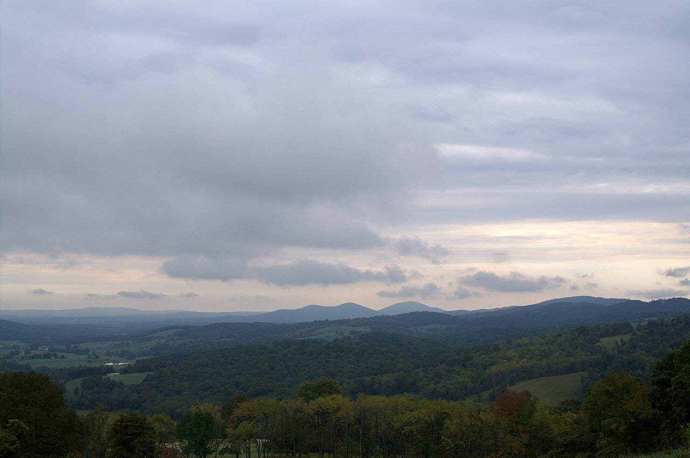
Photo: Aneta Kaluzna · Wikimedia Commons, CC BY-SA 2.5 Sky Meadows
Open pastures roll down from the ridge over the Piedmont countryside near Sky Meadows. The trail skirts the state park's grassy hillsides, a rare open vista in this wooded stretch. Take in the pastoral view, then plunge back into the woods toward the Roller Coaster.
-
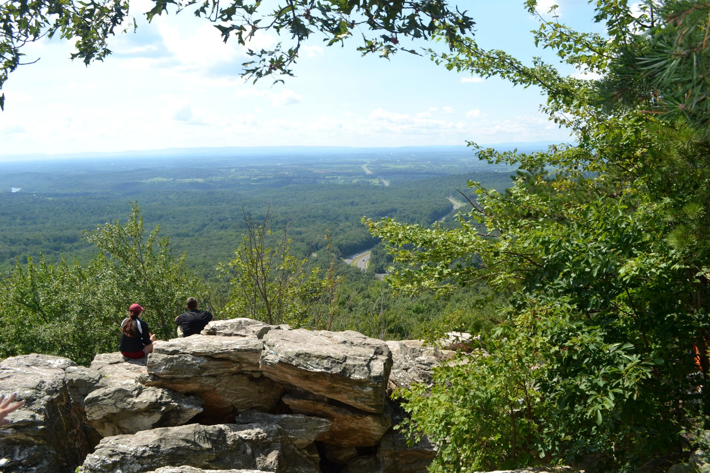
Photo: Strawser · Wikimedia Commons, CC BY-SA 3.0 Bears Den Rocks
Bears Den is a rocky outcrop with a wide western view and a stone hostel just off the trail. Its ledges face the sunset over the Shenandoah Valley, a favorite evening perch. Just to the north begins the Roller Coaster, a relentless string of short, steep climbs.
-
Blackburn Trail Center
A welcoming lodge with a broad porch, a resident caretaker, and cold drinks, the Blackburn Trail Center sits tucked in the woods of northern Virginia. It marks the heart of the Roller Coaster, that string of relentless little climbs. The last of those bumps lead on toward Harpers Ferry.
-
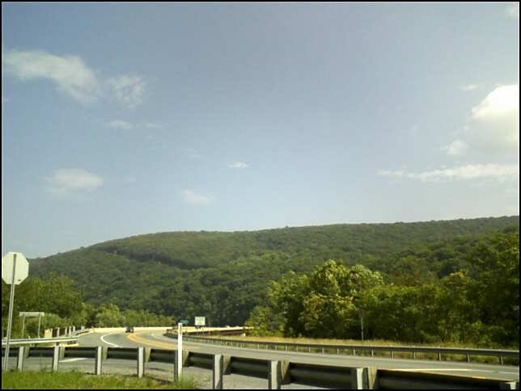
Photo: User:Arbogastlw · Wikimedia Commons, CC BY-SA 3.0 Loudoun Heights
Civil War earthworks still scar the ridge of Loudoun Heights, above the Shenandoah River and overlooking Harpers Ferry. Through the trees the two rivers can be seen converging at the historic town below. This is the last Virginia ground before the trail crosses toward the Potomac.
-
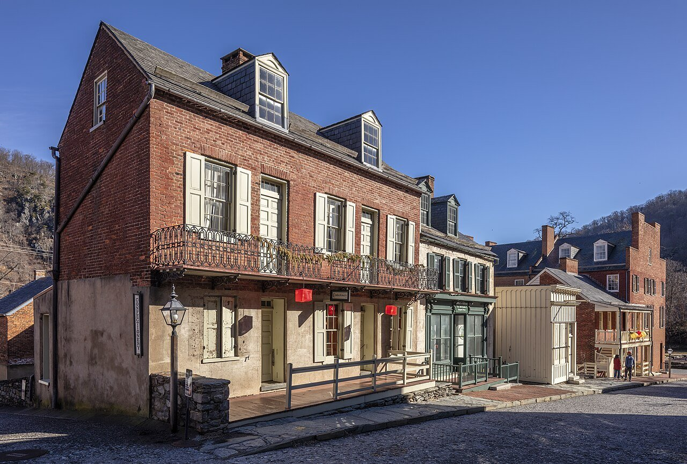
Photo: Acroterion · Wikimedia Commons, CC BY-SA 4.0 Harpers Ferry
Where the Potomac and Shenandoah rivers meet, Harpers Ferry sits as the heart of the trail and home of the people who care for it. Every hiker stops to be photographed and numbered in the logbook here. You are halfway, and the hardest miles still lie ahead, so keep going.
-
Photo: Bonnachoven · Wikimedia Commons, CC0 C&O Canal Towpath
Mules once hauled canal boats along the old C&O Canal towpath beside the Potomac in the 1800s, and today it gives the trail a flat, easy stretch, a rare level mile on the whole route. Stride out and enjoy the gentle going before the climb up South Mountain in Maryland.
-
Photo: Ksk2875 · Wikimedia Commons, CC BY-SA 3.0 Weverton Cliffs
Weverton Cliffs make a rocky overlook gazing down on the Potomac as it carves through the gap below. The view stretches up the wide river valley toward Harpers Ferry. It is a fine reward after the flat towpath miles; climb on along South Mountain toward the Washington Monument.
-
Photo: Zeete · Wikimedia Commons, CC BY-SA 4.0 Washington Monument State Park
The first monument ever raised to George Washington crowns South Mountain here, a squat stone tower built by townsfolk in 1827. Climb its spiral stair for a view over the Maryland farmland. It is a curious scrap of history on the ridge; descend and continue north through the Maryland miles.
-
Photo: Patorjk · Wikimedia Commons, CC BY-SA 4.0 Annapolis Rocks
A quartzite cliff at Annapolis Rocks throws a sweeping western view over the Cumberland Valley, with a popular campsite nearby. Vultures and hawks ride the updrafts along the escarpment. It is one of Maryland's finest overlooks; take it in, then walk toward Pen Mar and the state line.
-
Photo: Zeete · Wikimedia Commons, CC BY-SA 4.0 Pen Mar Park
The Mason-Dixon Line runs through Pen Mar Park, where the trail crosses from Maryland into Pennsylvania beside a fine westward view. Once a grand mountain amusement resort in the railroad era, the park now keeps only a quiet overlook and a pavilion. Pennsylvania's rocky ridges begin just to the north.
-
Photo: Whytecypress · Wikimedia Commons, CC BY 2.5 Caledonia State Park
Along Conococheague Creek, Caledonia State Park holds an old iron furnace that smelted ore here before the Civil War. A swimming pool and snack bar make it a pleasant rest stop. Cool off, then climb back into the long ridges of southern Pennsylvania.
-
Photo: Zeete · Wikimedia Commons, CC BY-SA 4.0 Pine Grove Furnace
Pine Grove Furnace State Park marks the traditional midpoint of the trail, and its general store hosts the famous half-gallon ice cream challenge. Hikers mark the halfway point by trying to eat an entire half-gallon in one sitting. Celebrate the milestone, then walk on through the boulder fields ahead.
-
Photo: Staecker · Wikimedia Commons, Public domain Boiling Springs
Bubbling springs feed the clear lake at the tidy village of Boiling Springs, where the trail also passes the regional trail office. Trout drift in the cold water of the Children's Lake. It is a charming, walkable town; resupply, then set out across the flat Cumberland Valley farmland.
-
Photo: Albrown3 · Wikimedia Commons, CC BY 3.0 Cumberland Valley
The open Cumberland Valley is a long, flat passage through farm fields and across the Conodoguinet Creek before the ridges return. Once a road walk, the trail now winds through pastures and woodlots. The level miles are a gift; enjoy them before the climb up Blue Mountain.
-
Darlington Shelter
Back atop Blue Mountain, Darlington Shelter perches on the ridge above the newly crossed Cumberland Valley. The hut looks south over a patchwork of farmland stitched across the broad lowland. It makes a quiet camp at the edge of the rocks before the long stony ridge to Duncannon.
-
Photo: Dincher · Wikimedia Commons, CC BY-SA 3.0 Duncannon
Duncannon is a river town where the trail runs the streets and crosses the wide Susquehanna on a highway bridge. The old Doyle Hotel has long been a hiker landmark on Market Street. Cross the great river, resupply, then climb into Pennsylvania's notorious rocks.
-
Peters Mountain
The long spine of Peters Mountain carries the trail over the Susquehanna's eastern ridge on sharp, ankle-twisting rock. The jagged Pennsylvania boulders the state is known for begin in earnest here. The crest runs on toward the gaps to the north.
-
Rausch Gap Shelter
The wooded ruins of an old coal-mining village surround Rausch Gap Shelter, where a clear spring still flows from the hillside. Stone foundations and an overgrown rail bed mark where a town once stood. It is a peaceful, historic camp; rest before the rocky miles toward Swatara Gap.
-
Photo: Zeete · Wikimedia Commons, CC BY-SA 4.0 Swatara Gap
Interstate 81 and the Swatara Creek cut through the ridge at Swatara Gap, and the trail drops to meet them. A restored old iron bridge carries the path across the creek. It is a low point between long rocky ridges; refill water and climb toward the next crest.
-
William Penn Shelter
High on the Blue Mountain ridge above the rolling Lebanon Valley sits William Penn Shelter. A side view opens north over the farmland and the long parallel ridges of central Pennsylvania. Rest at the hut, then continue along the stony crest toward Port Clinton.
-
Photo: Zeete · Wikimedia Commons, CC BY-SA 4.0 Port Clinton
A steep drop off the ridge lands the trail in Port Clinton, a small river town where it crosses the Schuylkill River. A historic hotel and a hiker pavilion welcome walkers coming off the mountain. North of town the climb leads back into the rocks toward the Pinnacle.
-
Photo: Zeete · Wikimedia Commons, CC BY-SA 4.0 Pulpit Rock
A stony outcrop at Pulpit Rock throws a wide southern view, with a small astronomical observatory nearby on the ridge. It pairs naturally with the Pinnacle just up the trail. Take in the vista, then continue across the long, boulder-strewn crest toward Lehigh Gap.
-
Photo: Claidheamhmor · Wikimedia Commons, CC BY-SA 4.0 The Pinnacle
Widely called the finest view in Pennsylvania, the Pinnacle is a rocky promontory over the patchwork farms of the valley below. Turkey vultures wheel along the cliff face on the rising air. Soak in the panorama, then follow the rocky ridge toward Lehigh Gap.
-
Photo: Nicholas A. Tonelli from Pennsylvania, USA · Wikimedia Commons, CC BY 2.0 Bake Oven Knob
A jumble of large boulders makes up Bake Oven Knob, opening views north and south over the Pennsylvania valleys. The rock-hopping across its crest ranks among the trickiest on this stretch of ridge. Beyond lie more boulders and the long descent into Lehigh Gap.
-
Photo: The original uploader was Malepheasant at English Wikipedia. · Wikimedia Commons, CC BY-SA 2.0 Lehigh Gap
The Lehigh River cuts a deep gap through the ridge, where the trail climbs out over bare slopes once stripped by decades of zinc smelting. A hands-on scramble up the far wall opens sweeping views across the scarred, slowly recovering hills. The route runs on north toward the New Jersey line.
-
Photo: Quintin Soloviev · Wikimedia Commons, CC BY 4.0 Delaware Water Gap
The Interstate 80 footway crosses the Delaware Water Gap, where the river slides far below through the cleft it carved between Mount Tammany and Mount Minsi. On the western bank, Pennsylvania's sharp rocks fall away for good. Across the water lies New Jersey, its black-bear country, and the glacial blue of Sunfish Pond on the Kittatinny ridge.
-
Photo: Famartin · Wikimedia Commons, CC BY-SA 4.0 Sunfish Pond
High on the Kittatinny ridge, Sunfish Pond glitters, a glacial lake ringed by boulders and one of New Jersey's natural treasures. It is the southernmost glacial lake on the trail, left behind by the last ice age. Walk the rocky shore, then continue north along the ridge.
-
Photo: ColonelHenry · Wikimedia Commons, CC BY-SA 3.0 Culvers Gap
A lakeside diner near Stokes State Forest draws hungry hikers to Culvers Gap, where a highway crosses the ridge. The Kittatinny ridge runs on north toward the fire tower above. Grab a meal, then climb back to the crest toward High Point.
-
Photo: AndyZ at en.wikipedia · Wikimedia Commons, Public domain High Point Monument
An obelisk crowns the highest spot in New Jersey at 1,803 feet: High Point Monument, reached by a short spur. The tower honors the state's war dead, and the view sweeps over three states. It is a striking landmark on the ridge; take in the panorama, then head down toward the Wallkill lowlands.
-
Photo: Nicholas A. Tonelli · Wikimedia Commons, CC BY 2.0 Pochuck Boardwalk
A long boardwalk threads the Pochuck Valley through marsh and meadow to a graceful suspension footbridge. Volunteers built it, carrying the trail dry-footed across what was once an impassable swamp. Stride across the wetland, then climb toward the Wawayanda ridge.
-
Photo: The original uploader was Kborland at Wikipedia. · Wikimedia Commons, CC BY-SA 3.0 Wawayanda Mountain
Hikers call the steep rock staircase up Wawayanda Mountain the Stairway to Heaven, for its relentless pitch. A ledge near the top looks back over the Vernon Valley and the long Pochuck boardwalk crossed below. From the crest the trail runs on toward the New York state line.
-
Prospect Rock
Prospect Rock is the highest point the Appalachian Trail reaches in New York, with a clear view over Greenwood Lake glinting below. The New York–New Jersey line runs close by, and the terrain grows rocky and rumpled underfoot. Tangled ridges carry the trail on toward Harriman.
-
Fitzgerald Falls
A slender cascade drops through a mossy rock cleft beside the trail at Fitzgerald Falls, deep in the New York woods. The cool spray is a welcome refreshment on a hot day. Pause at the falls, then climb through the rocky knobs toward the Harriman highlands.
-
Lemon Squeezer
The Lemon Squeezer is a narrow cleft between two great rock walls in Harriman State Park, so tight that packs must come off to fit. Just beyond, the trail scrambles up a steep rock face. It is a playful, hands-on stretch; wriggle through and climb on toward the Hudson.
-
Photo: Zeete · Wikimedia Commons, CC BY-SA 3.0 Bear Mountain
Perkins Memorial Tower crowns the summit of Bear Mountain, with a grand view down the Hudson toward the distant towers of New York City. The very first miles of the Appalachian Trail were built right here in the 1920s. Take in the river, then descend the famous stone staircase toward the Hudson.
-
Photo: Zachary Coleman · Wikimedia Commons, CC BY-SA 4.0 Bear Mountain Bridge
At just a hundred and twenty feet, the Bear Mountain Bridge carries the trail across the Hudson at its lowest elevation of the whole route. The wide tidal river flows beneath, framed by the steep slopes of the Hudson Highlands. It was once the longest suspension bridge in the world; cross to the east bank and climb toward Connecticut.
-
Photo: Le_Deluge · Wikimedia Commons, CC BY-SA 4.0 RPH Shelter
An enclosed cabin in the rolling hills of eastern New York, the RPH Shelter sometimes lets hikers order pizza to the door. The terrain here softens into farmland and low wooded ridges. Rest and refuel, then walk on toward the Connecticut line.
-
Photo: John Phelan · Wikimedia Commons, CC BY 3.0 Ten Mile River
The Ten Mile River meets the Housatonic close to the Connecticut state line, and a footbridge carries the trail across it. The quiet water slides through wooded banks in a peaceful hollow. Cross the bridge, then climb into the Litchfield Hills of Connecticut.
-
Caleb's Peak
Caleb's Peak and the nearby St. Johns Ledges rise as a steep granite face above the Housatonic River valley in Connecticut. Rock climbers test themselves on the ledges below the trail. Take in the river, then descend the stone steps to the long riverside walk.
-
Photo: H. Morrow Long · Wikimedia Commons, CC BY-SA 3.0 Housatonic River Walk
A long, flat stretch follows the bank of the Housatonic River here, a rare gentle riverside mile through the Connecticut woods. The broad water slides past quietly between forested banks. Stride out and enjoy the easy going before the climb toward the Berkshire hills.
-
Photo: Anc516 · Wikimedia Commons, CC BY 3.0 Great Barrington
Off the Berkshire ridge the trail drops into Great Barrington, crossing the Housatonic where US 7 runs past clapboard storefronts and the smell of a diner griddle. This was the boyhood home of W. E. B. Du Bois, who walked these same Berkshire hills. Resupply, then start the long climb toward the war-memorial tower on Mount Greylock, the rooftop of Massachusetts.
-
Photo: Famartin · Wikimedia Commons, CC BY-SA 4.0 Mount Greylock
A granite war-memorial tower marks the highest ground in Massachusetts, 3,491 feet, on the bare crown of Mount Greylock. Spruce and fir crowd the summit, and Bascom Lodge has fed and warmed hikers up here for nearly a century. Thoreau and Melville both climbed this hill; take the long view north, then descend toward the wooded summit of Glastenbury in Vermont.
-
Glastenbury Mountain
From the old fire tower on Glastenbury Mountain, the whole Green Mountain wilderness rolls away unbroken, not a road or roof in sight. Here the Appalachian Trail joins Vermont's Long Trail, the oldest long-distance path in the country, and shares its boggy spruce ridge north. Wind down through the dripping forest toward the broad summit of Stratton, where the trail was first dreamed up.
-
Photo: Erichardson2626 · Wikimedia Commons, CC BY-SA 4.0 Stratton Mountain
On the wooded dome of Stratton Mountain, Benton MacKaye sat in 1921 and first imagined a footpath the length of the Appalachians; climb the fire tower and look out over that same country. A caretaker's cabin sits in the spruce near the top, and the air smells of balsam. Sign the register at the tower, then follow the Long Trail north toward the high shoulder of Killington.
-
Photo: Sir Joseph · Wikimedia Commons, CC BY 2.5 Killington Peak
Killington Peak, the second-highest summit in Vermont, sits at the end of a short, steep spur where ski gondolas creak up the far slope and the Green Mountains pile blue to every horizon. Below stands the Inn at Long Trail, a favorite hiker stop for a Guinness after the climb. Here the Long Trail finally parts from the Appalachian route, which turns east toward the college town of Hanover.
-
Photo: Ken Gallager · Wikimedia Commons, CC BY-SA 3.0 Hanover
The Dartmouth College green opens right on the trail at Hanover, the route threading a brick campus where students cross the grass between classes. A local pizza counter is known for handing free slices to thru-hikers passing through. New Hampshire begins across the Connecticut River, and the first true climb of the White Mountains rears up ahead at Mount Moosilauke.
-
Photo: Unknown · Wikimedia Commons, Public domain Mount Moosilauke
Above the trees, the bald alpine top of Moosilauke stands hard and cold at 4,802 feet, cairns marking the way across ground where no tree survives. It is the first of the White Mountains' fierce open summits along the trail. The brutal Beaver Brook cascades drop from the far side toward the knife-edge of Franconia Ridge.
-
Photo: Paulbalegend · Wikimedia Commons, CC BY-SA 3.0 Franconia Ridge
The open spine of Franconia Ridge runs over Little Haystack, Lincoln, and Mount Lafayette, the ground falling thousands of feet on both sides and the wind shoving at the crest. On a clear day it is the finest mile of ridgeline in the East. Drop to the hut at the col, then turn toward the great brooding bulk of Mount Washington.
-
Photo: Harvey Barrison · Wikimedia Commons, CC BY-SA 2.0 Mount Washington
The highest peak in the Northeast, Mount Washington keeps some of the worst weather on earth on its bare alpine summit. The wind here once topped two hundred and thirty miles an hour. Cloud can swallow the Presidential Range in minutes, so move while the sky holds.
-
Photo: Gm206 at English Wikipedia · Wikimedia Commons, Public domain Mahoosuc Notch
Often called the hardest mile of the entire trail, Mahoosuc Notch is a deep cleft choked with boulders the size of cars. The route climbs over them, ducks under them, and squeezes between them, sometimes forcing packs off to fit. Ice lingers in the deepest cracks even at the height of summer.
-
Photo: ThePessimus · Wikimedia Commons, Public domain Saddleback Mountain
Avery Peak crowns the Bigelow Range, named for a trail surveyor who fought to keep these Maine mountains wild. The Carrabassett valley drops away below while Sugarloaf rises across it, and the ridge runs narrow and exposed between the range's twin peaks. It offers the last great alpine view of southern Maine before the trail descends to the cold ford of the Kennebec River.
-
Photo: Jscottcc · Wikimedia Commons, CC BY-SA 3.0 Bigelow Range
Avery Peak crowns the Bigelow Range, named for the surveyor who fought to keep these mountains wild, with the Carrabassett valley dropping away and Sugarloaf rising across it. The ridge runs narrow and exposed between the twin peaks, raked by wind. Take the last big alpine view of southern Maine, then descend toward the broad, cold ford of the Kennebec River.
-
Photo: Thomsonmg2000 · Wikimedia Commons, CC0 Kennebec River
The wide Kennebec River is the most dangerous ford on the whole Appalachian Trail, where an upstream dam can raise the cold current without warning. A ferryman paddles hikers across in a canoe, the only officially sanctioned water crossing on the route. The far bank leads on through quiet miles into Monson, at the edge of the Hundred Mile Wilderness.
-
Photo: Doug Kerr · Wikimedia Commons, CC BY-SA 2.0 Monson
Monson is the last town before the trail's end, standing at the edge of the Hundred Mile Wilderness. Beyond it lie roughly a hundred miles of deep Maine forest with no towns and few road crossings. Most hikers load a week of food here before walking into the trees for the final stretch to Katahdin.
-
Photo: Michael Sipos · Wikimedia Commons, CC BY-SA 4.0 Mount Katahdin
Katahdin rises alone from the Maine woods, its name meaning \"the Greatest Mountain\" in the language of the Penobscot. The final climb hauls hand over hand up bare granite to Baxter Peak, where a weathered wooden sign marks the northern end of the Appalachian Trail. Some two thousand one hundred and ninety-seven miles of ridgeline stretch back from this summit to Springer Mountain in Georgia, the full length of the trail.
Walking the Appalachian Trail
Your watch is already counting these steps. Watch Walks spends them on the Appalachian Trail, all 3,536 km of it, and hands you each landmark as you reach it. There's no route recording, no account and no ads. The Inca Trail is free; this one is a one-time purchase with no subscription.
Other trails in North America
- Pacific Crest Trail 4,265 km · USA
- Route 66 3,940 km · USA
- John Muir Trail 340 km · USA (California)
- Wonderland Trail 150 km · USA (Washington)
- The Long Trail 439 km · USA (Vermont)
- Tahoe Rim Trail 265 km · USA (California/Nevada)